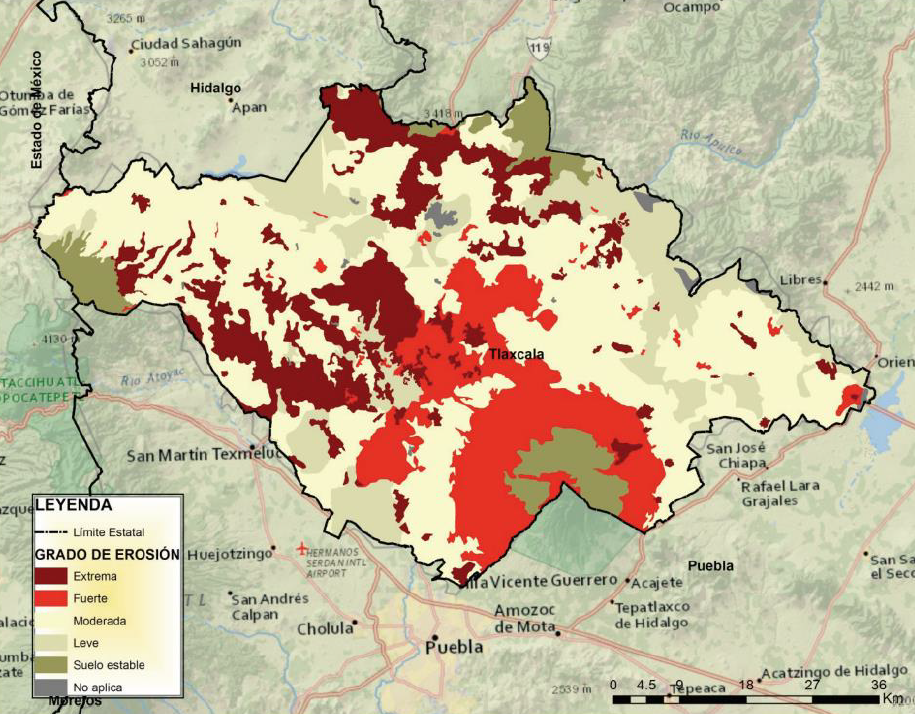
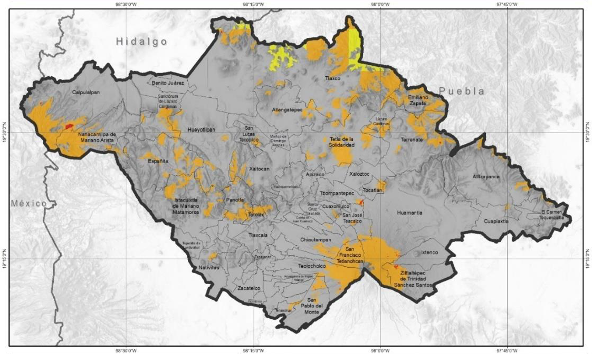

Los impactos del cambio climático son los efectos observados o proyectados que las variaciones climáticas tienen sobre los sistemas naturales y humanos. Estos efectos pueden ser positivos o negativos, directos o indirectos.
Tlaxcala tiene 402,450 hectáreas, más de la mitad dedicadas a cultivos como maíz, cebada, trigo y frijol, principalmente en primavera-verano. La superficie agrícola ha disminuido un 6.1 % por cambios en el uso del suelo y urbanización. Los impactos se manifiestan principalmente en:
| Ciclo Agrícola (Riego + Temporal) |
Superficie Sembrada (ha) |
Superficie Cosechada (ha) |
Valor de producción (miles de pesos) |
|---|---|---|---|
| Primavera-Verano | 226,036.33 | 226,036.33 | 4,207,512.62 |
| Otoño-Invierno | 1,473.00 | 1,473.00 | 67,600.76 |
| Perennes | 5,841.00 | 5,768.00 | 447,219.79 |
| Total | 233,350.33 | 233,277.33 | 4,722,333.17 |
Fuente: Servicio de Información Agroalimentaria y Pesquera (SIAP), 2022.
Entre 2010 y 2022, eventos como lluvias intensas, granizadas y heladas afectaron cultivos en Tlaxcala, sobre todo maíz, cebada, trigo y alfalfa. En 2011, se perdieron más de 33,000 ha de maíz, 22,600 ha de cebada y 15,300 ha de trigo (SIAP-SAGARPA).
La superficie siniestrada representa las hectáreas de cultivo que sufrieron pérdidas totales debido a fenómenos climáticos adversos como sequías, heladas, granizadas o inundaciones.
En Tlaxcala, los principales cultivos afectados históricamente son:
El año 2011 registró los mayores siniestros con más de 71,000 hectáreas afectadas, principalmente por heladas atípicas.
| Año | Maíz grano | Trigo | Cebada | Alfalfa | Durazno | Total |
|---|---|---|---|---|---|---|
| 2022 | 0 | 0 | 0 | 0 | 0 | 0 |
| 2021 | 0 | 0 | 0 | 0 | 0 | 0 |
| 2020 | 425 | 0 | 0 | 0 | 0 | 425 |
| 2019 | 216 | 0 | 0 | 0 | 0 | 216 |
| 2018 | 430 | 0 | 0 | 0 | 0 | 430 |
| 2017 | 0 | 0 | 0 | 0 | 0 | 0 |
| 2016 | 0 | 0 | 0 | 0 | 0 | 0 |
| 2015 | 0 | 0 | 0 | 0 | 0 | 0 |
| 2014 | 1,050 | 130 | 5,000 | 0 | 0 | 6,180 |
| 2013 | 0 | 50 | 0 | 0 | 0 | 50 |
| 2012 | 7,154 | 0 | 0 | 0 | 0 | 7,154 |
| 2011 | 33,765.29 | 15,319 | 22,629.8 | 0 | 0 | 71,714.09 |
| 2010 | 687.5 | 386 | 649.5 | 0 | 0 | 1,723 |
| Total | 43,727.79 | 15,885 | 28,279.3 | 0 | 0 | 87,892.09 |
Fuente: Anuario Estadístico de la Producción Agrícola, periodo de análisis 2010-2022. (https://nube.siap.gob.mx/cierreagricola/)
Frente a la sequía y otros efectos del cambio climático, el sector agrícola de Tlaxcala requiere implementar estrategias de adaptación que permitan mantener la productividad y garantizar la seguridad alimentaria.
Estas estrategias se organizan en 4 ejes principales: gestión eficiente del agua, prácticas agrícolas sostenibles, innovación tecnológica y gestión integral del territorio.
La implementación de estas medidas contribuirá a reducir la vulnerabilidad de los agricultores y a fortalecer la resiliencia del sector ante eventos climáticos extremos.
Los incendios forestales y el cambio climático están estrechamente relacionados, con importantes implicaciones para los ecosistemas, la biodiversidad y la calidad del aire.
En Tlaxcala, representan un gran peligro debido a la abundancia de materia orgánica con potencial de ignición. Impactan negativamente la conservación forestal, el aprovechamiento silvícola y las acciones de reforestación.
El fuego causa efectos directos (muerte de individuos) e indirectos más duraderos: estrés, pérdida de hábitat y desaparición de especies clave como polinizadores y descomponedores, retardando significativamente la recuperación del bosque.
La superficie boscosa de Tlaxcala (coníferas y latifoliadas) enfrenta diversas plagas forestales: descortezadores, defoliadores, barrenadores y plantas parásitas como el muérdago enano.
El descortezador en el Parque Nacional La Malinche presenta desafíos significativos debido a restricciones para derribar árboles afectados, fragmentación de terrenos e indefinición en la tenencia de la tierra.
La disminución de precipitación y el aumento de temperatura debilitan los bosques, haciéndolos más vulnerables. La sequía propicia un desequilibrio que facilita el ataque de estos insectos.
| Año | Insectos descortezadores | Enfermedades | Plantas parásitas | Superficie total afectada (ha) |
|---|---|---|---|---|
| 2010 | 2.39 | 120.00 | 662.00 | 784.39 |
| 2011 | 102.02 | 23.61 | 1,060.00 | 1,185.63 |
| 2012 | 605.32 | - | 961.40 | 1,566.72 |
| 2013 | 1,122.09 | 100.29 | 482.00 | 1,704.38 |
| 2014 | 822.69 | - | 845.00 | 1,667.69 |
| 2015 | 1,039,394 | - | 725.00 | 1,040,119 |
| 2016 | 65.18 | - | 2,195.01 | 2,260.19 |
| 2017 | 0.79 | - | 2,830.43 | 2,831.22 |
| 2018 | 55.00 | - | 3,451.80 | 3,506.80 |
| 2019 | 70.80 | 0.13 | 168.18 | 239.11 |
| 2020 | 814.78 | - | 75.55 | 890.33 |
| 2021 | 1,619.41 | - | 182.15 | 1,801.56 |
| Total | 1,044,674.41 | 244.03 | 13,638.52 | 1,058,556.96 |
Fuente: CONAFOR-Programa Operativo de Sanidad Forestal, 2022

| Estado | Extrema | Fuerte | Moderada | Leve | Zona de exclusión | Suelo estable | Total erosión | Erosión apreciable |
|---|---|---|---|---|---|---|---|---|
| Tlaxcala | 16.76 | 16.28 | 44.39 | 15.55 | 0.76 | 6.25 | 92.99 | 33.04 |
Fuente: Colegio de Postgraduados, 2016.
La erosión hídrica afecta al 93% del territorio de Tlaxcala, siendo uno de los problemas ambientales más críticos del estado.
Solo el 6.25% del territorio mantiene suelos estables sin evidencia de erosión.

El cambio climático está creando condiciones más favorables para el escarabajo descortezador en Tlaxcala, acelerando su ciclo de vida y aumentando su reproducción. Al mismo tiempo, la sequía y el calor debilitan a los árboles, haciéndolos más vulnerables a la infestación. Esto representa una amenaza seria para los bosques del estado, ya que el insecto puede causar daños extensos y afectar la biodiversidad.